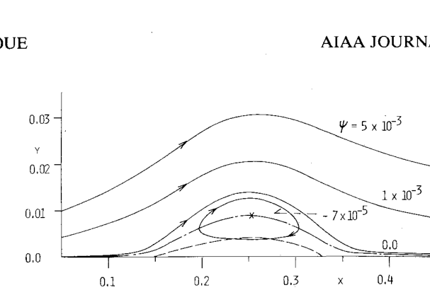
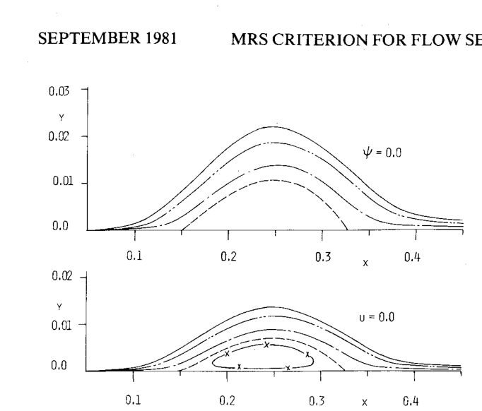
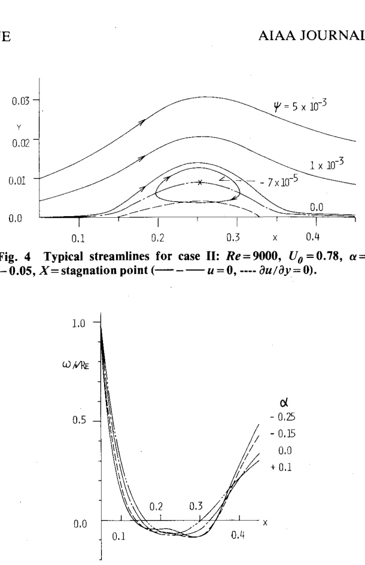

01中文摘要
对二维定常不可压缩层流在运动平板上的边界层进行数值研究，重点检验Moore–Rott–Sears（MRS）分离判据。为避免在分离点遇到边界层方程的奇异性，采用含法向压力变化的近似方程（相互作用边界层模型），在给定外缘速度分布下用有限差分迭代求解，使计算可穿越分离泡。考虑三种流动，其一与Tsahalis算例相近，雷诺数取3000–12000。结果表明：下游运动壁面在回流区附近存在两个MRS点，上游MRS点的速度剖面符合MRS模型；上游运动壁面则不存在u=0线与∂u/∂y=0线的交点，MRS判据不满足。
02阅读说明
理论/数值短文（AIAA Journal 技术注记），共 4 页（PDF p1–4，刊页 1108–1111）。材料含 4 条图件（图 3–图 6）；正文引用的图 1、图 2、图 7 未进入图件清单，只能依据正文描述，不能作为图件引用。公式 (1)–(7) 的 OCR 严重受损，符号与分式多处讹误；case 定义与收敛判据亦有缺字。表 1–5 不存在，本文无表格。定量信息主要来自正文文字与图注，图中曲线数值无法精确读取。凡不能确认处均按“受限于材料，无法确认”处理。 文章类型：期刊
03一句话核心与三句话摘要
用近似方程数值求解运动壁面分离泡，发现 MRS 判据只在下游行壁成立、上行壁不成立。
- 以往对上行运动壁面的计算多止于 MRS 点或边界层解破裂处，缺少穿过整个回流区的数值描述，MRS 判据是否适用尚未确认。 AI概括
- 作者用允许压力横向变化的涡量—流函数近似方程、壁速变换与逐线迭代，计算三种外流/壁速组合、Re=3000–12000 的分离泡。 AI概括
- 下行壁出现两个 MRS 点且上游点速度剖面符合 MRS 模型；上行壁的 u=0 与 du/dy=0 两线不相交，MRS 判据不成立。 AI概括
04核心内容清单
| 要点 | 类型 | 重要性 | 原文依据 | 属性 |
|---|---|---|---|---|
| 提出用近似方程（interacting boundary-layer 型）代替边界层方程，可在给定外流速度下穿过分离泡求解而不在分离点遇到奇点。 | 方法 | A | p1–p2 §Governing Equations | 原文明确 |
| 通过 u=ũ+uw(x) 的壁速变换，把运动壁问题化为相对速度的固定壁问题，外缘条件变为 ũ=Ue−uw。 | 方法 | A | p2 式(3)–(5) | 原文明确 |
| 下行运动壁：回流区附近有两个 MRS 点，上游 MRS 点的速度剖面与 MRS 模型一致。 | 关键结果 | A | p3，Fig. 1a、Fig. 2a | 原文明确 |
| 上行运动壁（Case I）：MRS 点不存在，u=0 线与 du/dy=0 线不相交，MRS 模型剖面不出现。 | 关键结果 | A | p3，Fig. 1b、Fig. 2b | 原文明确 |
| Case II（类似 Tsahalis 的 Howarth 型流动）同样：上行壁无 MRS，下行壁有 MRS。 | 关键结果 | A | p3，Fig. 4、Fig. 5 | 原文明确 |
| 上行壁的 du/dy=0 点位于两个零壁剪点之间（Fig. 4 虚线），作者认为无法从 Tsahalis 结果构造满足 MRS 的两条线。 | 机制/判据 | A | p3 正文，Fig. 4 | 原文明确 |
| 上行壁无法确定 dividing streamline：结果只有一个驻点（回流泡中心）；可用 ψ=0 与 u=0 线粗略估计回流泡尺度。 | 关键结果 | A | p3，Fig. 6 | 原文明确 |
| |α| 增大时，上行壁回流泡变大、下行壁回流泡变小。 | 参数趋势 | B | p3–p4 | 原文明确 |
| Case III 的一般外流下，上行壁 MRS 判据仍从未满足。 | 关键结果 | A | p4，Fig. 7 | 原文明确 |
| 本文结论与 Fansler & Danberg 的积分理论一致，与 Koromilas & Telionis 旋转圆柱实验的分流线观察不一致。 | 对比/结论 | A | p4 | 原文明确 |
| 作者把旋转圆柱的差异归因于 u′∞y 项（本文 α 常数时为零）、壁面曲率与 (∂²u/∂x²)/Re，均未在本文计算。 | 局限/展望 | B | p4 | 原文明确 |
| 固定壁（α=0）的 Case II 已与 Briley 的 Navier–Stokes 解对比，近似方程能较好逼近。 | 验证 | B | p2–p3 | 原文明确 |
05引言：研究问题与领域缺口
（1）经典判据的局限：壁面剪应力为零（du/dy=0 at y=0）只适用于固定壁面定常流；Moore、Rott、Sears 独立提出更一般的判据——在 u=0 处同时 du/dy=0，即 MRS 判据（p1）。（2）已有验证：Ludwig 的热线实验、Koromilas & Telionis 的旋转圆柱流动显示下行壁附近存在与 MRS 模型相似的流线与速度剖面；Telionis & Werle、Tsahalis & Telionis 对抛物面下行壁的边界层积分可穿过零壁剪点；Danberg & Fansler 的相似解在下行壁得到 MRS 剖面（p1）。（3）上行壁的困难：上行壁近壁 u<0、上层 u>0，数值求解需特殊处理；Tsahalis 用非定常边界层方程的大时间渐近解得到接近 MRS 的剖面，但 Danberg & Fansler 指出定常边界层方程不允许 MRS 剖面；Tsahalis 猜测完整 Navier–Stokes 可能允许 MRS；Fansler & Danberg 的积分理论则在上行壁未找到 MRS 剖面（p1）。（4）缺口：以往理论计算多止于 MRS 点或边界层解破裂点，作者所知尚无穿过分离泡、覆盖上行壁的数值描述（p1）。（5）目标与路线：不用边界层方程，而用一套近似方程（本质上是 Werle & Bernstein 的 interacting boundary-layer 模型），在给定外流速度下数值积分穿过分离泡，考察上行与下行壁的 MRS 判据，并给出三种流动类型的解（p1–p2）。
06流动条件与几何构型
| 项目 | 数值/描述 | 依据 | 备注 |
|---|---|---|---|
| 流动类型 | 二维、定常、不可压、层流平板边界层/分离流 | p1 §Governing Equations | |
| 坐标系与壁面运动 | 坐标 (x,y) 固定；平板以 u=uw 运动，uw<0 为上行、uw>0 为下行 | p1 | |
| 归一化 | 速度以来流 u∞ 归一化，长度以特征长度 L 归一化；Re=u∞L/ν | p1 | |
| Case I 外流 Ue(x) | Ue=1−x（x1<x<x3）；Ue=U0（常数，x3<x<x2） | p2 左栏 | |
| Case I 壁速 | uw(x)=α（常数） | p2 左栏 | |
| Case I 计算域 | x1=0.05，x2=0.45，ye=0.05（均以 L 归一化） | p2 左栏 | |
| Case I 网格 | Δx=0.005，Δy=0.001 | p2 左栏 | |
| Case I 外流常数 U0 | 0.76、0.78、0.80 | p2 左栏 | |
| Case II 外流与域 | 与 Case I 相同（Ue=1−x→U0，x1=0.05，x2=0.45，ye=0.05，Δx=0.005，Δy=0.001） | p2 左栏 | |
| Case II 壁速 | x3 以后 uw=α(x3−x1)（常数）；x1<x<x3 的线性段形式受 OCR 损坏，无法确认 | p2 左栏 | 原文该式前段缺失，仅能读出“=α(x3−x1)（=const）（x3<x<x2）” |
| Case III 外流 Ue(x) | Ue=1.0（x1<x<0）；Ue=1.0+Ax²(3−2x)（0<x<1）；Ue=1.0+A（常数，1<x<x2） | p2 左栏 | |
| Case III 计算域 | x1=−2.0，x2=5.0，ye=0.2 | p2 左栏 | |
| Case III 网格 | Δx=0.05，Δy=0.005 | p2 左栏 | |
| Case III 壁速 | uw(x)=α（常数） | p2 左栏 | |
| Case III 参数 A | −0.12、−0.1、−0.08、−0.05 | p2 左栏 | |
| 雷诺数 | Re=3000、6000、9000、12000 | p2 左栏 | |
| 上游边界条件 | Case II 用 Howarth 边界层解；Case I、III 用相似解 | p2–p3 | |
| 壁面边界条件 | y=0：u=uw，v=0（变换后 ũ=0，v=0） | p2 式(2)、(5) | |
| 外缘边界条件 | y=ye：ω=0，u=Ue(x)（变换后 ũ=Ue−uw） | p2 式(2)、(5) | |
| 下游边界条件 | x=x2：∂²ψ/∂x²=0（变换后为 ∂²ψ/∂x²=−u′wy） | p2 式(2)、(5) | |
| 收敛判据 | ω 与 ψ 相邻两次迭代最大变化小于某一小量；OCR 显示约 1×10^-7，具体值受限于材料，无法确认 | p2 右栏 | |
| 固定壁验证算例 | Case II 的 α=0 解与 Briley 的 Navier–Stokes 解对比 | p2–p3 |
07核心现象与关键参数
| 参数 | 定义 | 数值 | 关系/说明 | 依据 |
|---|---|---|---|---|
| Re | 雷诺数 u∞L/ν | 3000、6000、9000、12000 | 唯一相似参数；决定边界层厚度与分离泡尺度 | p2 |
| uw | 壁面运动速度（以 u∞ 归一化） | 上行 uw<0、下行 uw>0；图中典型 α=−0.05 | 决定近壁速度符号与 u=0 线的位置 | p1–p3 |
| α | Case I/III 的常数壁速；Case II 中为壁速斜率参数 | 图 3–图 6 涉及 α=−0.25、−0.15、−0.05、0.0、+0.025 等 | |α| 越大，上行壁回流泡越大、下行壁越小 | p2–p4，Fig. 6 图注 |
| U0 | Case I/II 下游外流常数速度 | 0.76、0.78、0.80 | 控制逆压梯度后的外流平台 | p2 |
| Ue(x) | 边界层外缘速度分布 | Case I/II：1−x→U0；Case III：1.0→1.0+Ax²(3−2x)→1.0+A | 规定逆压梯度与分离位置 | p2 |
| x1、x2、ye | 上游边界、下游边界与边界层外缘位置（以 L 归一化） | Case I/II：0.05、0.45、0.05；Case III：−2.0、5.0、0.2 | 计算域范围；上游给定边界层解，下游取无剪条件 | p2 |
| Δx、Δy | 流向与法向网格间距（以 L 归一化） | Case I/II：0.005、0.001；Case III：0.05、0.005 | 离散分辨率；本文未报告网格无关性 | p2 |
| u=0 线 | 绝对速度为零的等值线 | 上行壁在近壁出现，下行壁位置随壁速移动 | MRS 判据的第一个条件 | p3 |
| du/dy=0 线 | 速度法向梯度为零的等值线（即 ω=0） | 由相对速度剖面决定 | MRS 判据的第二个条件；与 u=0 线相交即 MRS 点 | p3 |
| ψ=0 线 | 流函数为零的线 | 用于估计回流泡尺度 | 上行壁无分流线时，与 u=0 线一起给出泡的边界 | p3，Fig. 6 |
| A | Case III 外流速度变化的幅值参数 | −0.12、−0.1、−0.08、−0.05 | 控制 Case III 的逆压/顺压梯度强度 | p2 |
08方法与数据
（1）控制方程：二维、定常、不可压、层流平板流动；采用涡量—流函数近似方程组 (1a)–(1b)，其中 Re=u∞L/ν，变量以来流速度 u∞ 与特征长度 L 归一化；该方程组允许压力横向变化，固定壁时已证明能较好逼近 Navier–Stokes 解（p1，式(1)）。（2）边界条件：y=0 处 u=uw、v=0；y=ye 处 ω=0、u=Ue(x)；上游 x=x1 由边界层解给定 ω 与 ψ；下游 x=x2 取 ∂²ψ/∂x²=0（p2，式(2)）。（3）壁速变换：令 u=ũ+uw(x)，把运动壁问题化为相对速度的固定壁问题，得到式 (4a)–(4c) 与变换后的边界条件 (5)；变换后壁面 ũ=0，外缘 ũ=Ue−uw（p2，式(3)–(5)）。（4）迭代：先取固定壁解 ω(0)，代入式 (4a) 的 uw(∂ũ/∂x) 项，解式 (6)/(7) 得 ω(1)、ψ(1)，再回代，直至 ω 与 ψ 的最大变化小于给定小量（p2）。（5）离散：逐条 x 线求解三对角方程组，从上游向下游推进；w>0 时式 (7a)、(7c) 用 Carter–Wornom 三点后差，w<0 时用中心差分、仅 ∂ũ/∂x 用一阶前差；式 (7b) 始终用中心差分（p2）。（6）算例：Case I 为 Ue=1−x 后接常数 U0、uw=α 常数，x1=0.05、x2=0.45、ye=0.05、Δx=0.005、Δy=0.001，U0=0.76/0.78/0.80；Case II 外流同 Case I、壁速在 x3 后为常数，形式与 Tsahalis 的 Howarth 型问题相似；Case III 为 Ue=1.0→1.0+Ax²(3−2x)→1.0+A，x1=−2.0、x2=5.0、ye=0.2、Δx=0.05、Δy=0.005，uw=α 常数，A=−0.12/−0.1/−0.08/−0.05；Re=3000/6000/9000/12000（p2）。（7）上游条件与验证：Case II 用 Howarth 边界层解，Case I、III 用相似解；Case II 的固定壁（α=0）解已与 Briley 的 Navier–Stokes 解对比并验证（p2–p3）。
| 项目 | 内容 | 依据 | 备注 |
|---|---|---|---|
| 控制方程 | 二维定常不可压涡量—流函数近似方程 (1a)–(1b)，允许压力横向变化；Re=u∞L/ν | p1 | 等价于 Werle & Bernstein 的 interacting boundary-layer 模型；非边界层方程 |
| 离散 | 有限差分；逐条 x 线求解三对角方程组，从上游向下游推进 | p2 右栏 | |
| ω>0 的格式 | 式 (7a)、(7c) 用 Carter–Wornom 三点后差 | p2 右栏 | |
| ω<0 的格式 | 式 (7a)、(7c) 用中心差分；仅 ∂ũ/∂x 用一阶前差 | p2 右栏 | |
| 式 (7b) 的格式 | 无论 u 正负均用中心差分 | p2 右栏 | |
| 迭代 | 把上一次 ω 代入 uw(∂ũ/∂x) 项，逐次求解 ω、ψ，直至相邻两次最大变化小于小量 | p2 左栏 | |
| 壁速变换 | u=ũ+uw(x)，使运动壁化为相对速度的固定壁；外缘条件变为 ũ=Ue−uw | p2 式(3)、(5) | |
| 上游条件 | Case II 用 Howarth 边界层解；Case I、III 用相似解 | p2–p3 | |
| 下游条件 | ∂²ψ/∂x²=0（变换后 ∂²ψ/∂x²=−u′wy） | p2 式(2)、(5) | |
| 算例设置 | Case I/II/III 三类外流与壁速组合；Re=3000–12000；U0=0.76–0.80；A=−0.12 至 −0.05 | p2 | |
| 验证 | 固定壁（α=0）Case II 与 Briley 的 Navier–Stokes 解对比；近似方程能较好逼近 | p2–p3 | |
| 收敛与网格 | 收敛容差约 1×10^-7（OCR 不清）；网格 Δx、Δy 固定，未报告网格无关性 | p2 右栏 |
09核心推导与公式
核心思路是把运动壁面的绝对速度分解为相对速度与壁速之和：u=ũ+uw(x)。这样壁面条件回到 ũ=0，而外缘条件变为 ũ=Ue−uw，运动壁问题被改写为“外流被壁速修正”的固定壁问题。然后在这个相对坐标系中检查 MRS 的两个条件——u=0（即 ũ=−uw）与 ∂u/∂y=0（即 ω=0）——是否能在同一点同时满足。由于近似方程可在给定 Ue(x) 下穿过分离泡求解，作者得以把“两线是否相交”作为数值几何问题来回答。
关键假设
- 二维、定常、不可压、层流
- 采用近似方程（interacting boundary-layer 型），保留压力横向变化，而非完整 Navier–Stokes
- 外流速度 Ue(x) 预先给定，不通过黏性—无黏耦合迭代求解
- 平板无曲率；物性常数；高 Re
- 壁速 uw(x) 只随 x 变化，法向均匀
- 上游边界由已知边界层解提供，下游取 ∂²ψ/∂x²=0
推导过程
以涡量 ω 与流函数 ψ 表示二维定常不可压流动；式 (1a) 为涡量输运，式 (1b) 为连续方程。该方程组允许压力沿 y 变化，固定壁时已与 Navier–Stokes 对比验证。OCR 只保留了主要项，具体系数/附加项受限于材料，无法确认。
壁面无滑移且随壁运动；外缘涡量为零、速度等于给定外流；上游由边界层解给出 ω、ψ；下游取流函数二阶导为零。
引入相对速度 ũ，把壁面运动从边界条件中分离出来。这一步是整个判据分析的关键：变换后壁面恒为 ũ=0，绝对速度的零点变为 ũ=−uw。
式 (4a) 保持涡量输运形式；式 (4c) 给出相对流函数与横向速度。原文方法段明确提到式 (4a) 含 uw(∂ũ/∂x) 项，但其符号与在式中的确切位置 OCR 无法辨认，故此处不写入。式 (4b) 的末项 OCR 讹误，受限于材料，无法确认；作者在结论中说该项在本文 α 为常数时为零，说明它与 u′w 成正比。
壁面相对速度为零；外缘相对速度等于 Ue−uw；下游条件出现 −u′wy 项。
先解固定壁问题得 ω(0)，将其代入 uw(∂ũ/∂x) 项，解三对角方程组得 ω(1)、ψ(1)，再回代，直到 ω 与 ψ 的变化小于小量。每一条 x 线从上游向下游推进；ω>0 用三点后差，ω<0 用中心差分（∂ũ/∂x 用一阶前差）。
MRS 要求绝对速度与其法向梯度在同一点为零。由 u=ũ+uw 与 ω=∂u/∂y 直接可得：u=0 等价于 ũ=−uw，∂u/∂y=0 等价于 ω=0。因此 MRS 点就是 u=0 线与 ω=0（即 du/dy=0）线的交点。这一等价关系是本文全部结果的判读基础（AI概括，依据式(3)与式(4b)）。
适用边界：（1）近似方程不是完整 Navier–Stokes，压力—速度耦合被简化，壁面曲率与 (∂²u/∂x²)/Re 被忽略（作者明确承认）。（2）式 (1)、(4a)、(4b)、(6)、(7) 的 OCR 受损，附加项、系数与收敛容差无法核对；本推导中的方程形式只保留可辨认部分，不能视为原式的完整复现。（3）外流 Ue(x) 预先给定，未做黏性—无黏强耦合。（4）未报告网格无关性与时间/迭代误差，定量精度无法评估。（5）Case II 壁速前段定义缺失，无法复核与 Tsahalis 的对应程度。
10结果：主要发现与关键证据
（1）Case I 下行壁：回流区附近存在两个 MRS 点，上游 MRS 点即以往所谓 MRS 分离点，该点速度剖面与 MRS 模型一致（p3，Fig. 1a、Fig. 2a）。（2）Case I 上行壁：MRS 点不存在，u=0 线与 du/dy=0 线不相交，MRS 模型预期的速度剖面不出现（p3，Fig. 1b、Fig. 2b）；不同壁速的壁剪分布见 Fig. 3（p3）。（3）Case II：与 Case I 相同，上行壁无 MRS 分离点、下行壁有；上行壁的 du/dy=0 点位于两个零壁剪点之间（Fig. 4 虚线），作者无法从 Tsahalis 的结果画出物理上合理的 du/dy=0 与 u=0 线使其满足 MRS（p3，Fig. 4、Fig. 5）。（4）分离流线：上行壁无法确定 dividing streamline，因为结果只有一个驻点（回流泡中心）；但可用 ψ=0 与 u=0 线随回流泡发展的偏离来粗略估计泡的尺度（p3，Fig. 6）。（5）壁速影响：|α| 增大时上行壁回流泡变大、下行壁回流泡变小（p3–p4）。（6）Case III：一般外流下同样地，上行壁 MRS 判据从未满足（p4，Fig. 7）。（7）总体：本文三类流动（包括与 Tsahalis 相似者）中，MRS 判据对上行壁均不成立，对下行壁成立；这与 Fansler & Danberg 的积分理论一致，却与 Koromilas & Telionis 旋转圆柱实验得到的分流线不一致（p4）。
| 发现 | 证据 | 证据类型 | 强度 | 位置 | 属性 |
|---|---|---|---|---|---|
| 下行运动壁的 MRS 判据成立：回流区附近出现两个 MRS 点，上游 MRS 点就是以往往所谓 MRS 分离点，其速度剖面与 MRS 模型一致。 | Fig. 1a 的 u=0 与 du/dy=0 线相交；Fig. 2a 的 MRS 站速度剖面与模型对比；正文明确“two MRS points exist near a recirculating region” | 定量/定性结果 | 强 | p3，Fig. 1a、Fig. 2a | 原文明确 |
| 上行运动壁的 MRS 判据不成立（Case I）：u=0 线与 du/dy=0 线不相交，MRS 模型预期的速度剖面不出现。 | Fig. 1b 的流线与两条判据线；Fig. 2b 的速度剖面；正文明确“an MRS point does not exist” | 关键结果 | 强 | p3，Fig. 1b、Fig. 2b | 原文明确 |
| 类似 Tsahalis 的 Case II 给出同样结论：上行壁无 MRS 分离点，下行壁有；上行壁的 du/dy=0 点位于两个零壁剪点之间。 | Fig. 4 的虚线（du/dy=0）与 u=0 线；Fig. 5 的不同壁速壁剪分布；正文对 Tsahalis 结果无法构造 MRS 线的评论 | 关键结果/对比 | 强 | p3，Fig. 4、Fig. 5 | 原文明确 |
| 上行壁无法确定 dividing streamline：计算结果只有一个驻点，且该点是回流泡中心；回流泡尺度只能由 ψ=0 与 u=0 线的偏离粗略估计。 | Fig. 6 的 ψ=0 与 u=0 线；正文明确“we could not determine a dividing streamline” | 关键结果 | 中 | p3，Fig. 6 | 原文明确 |
| 壁速幅值 |α| 增大时，上行壁的回流泡变大，下行壁的回流泡变小。 | Fig. 6 不同 α 的 ψ=0/u=0 线位置；正文明确给出这一趋势 | 参数趋势 | 中 | p3–p4，Fig. 6 | 原文明确 |
| 一般外流（Case III）下，上行壁的 MRS 判据仍从未满足。 | Fig. 7 的 Case III 流线与判据线；正文明确“the MRS criterion is never satisfied for upstream-moving walls” | 关键结果 | 强 | p4，Fig. 7 | 原文明确 |
| 本文结论与 Fansler & Danberg 的积分边界层理论一致，但与 Koromilas & Telionis 旋转圆柱实验得到的分流线观察不一致。 | 正文对两项工作的直接比较；结论段明确写出两处对照 | 对比/结论 | 中 | p4 | 原文明确 |
| 作者提出 u′∞y 项（本文 α 常数时为零）、壁面曲率与 (∂²u/∂x²)/Re 可能是旋转圆柱与本文差异的来源，但未计算验证。 | 结论段原文；三项均列为“left for the future” | 局限/展望 | 弱 | p4 | 原文明确 |
| 近似方程可在给定 Ue(x) 下穿过分离泡求解而不在分离点遇到奇点，这是本文能描述上行壁回流区的方法前提。 | 引言与方法段对边界层方程分离奇点的讨论；固定壁结果与 Briley 的 Navier–Stokes 解对比 | 方法 | 中 | p1–p2 | 原文明确 |
11机制解释与论证链
壁面运动改变的是绝对速度零点 u=0 的位置：上行壁使近壁流体向负 x 运动，u=0 线被抬离壁面；下行壁则把近壁流体带向下游，u=0 线贴近壁面并在回流区附近与 ω=0 线相交。MRS 能否成立取决于这两条线是否在同一点相遇：下行壁的相对速度剖面在回流区附近出现合适的拐折，使 ∂u/∂y=0 的位置恰与 u=0 重合；上行壁的相对速度在壁面为零、在外缘为 Ue+|uw|，速度剖面单调性被破坏的方式不同，ω=0 的位置落在两个零壁剪点之间，与 u=0 线错开，故无 MRS 点（p3；机制解释为 AI概括，几何事实为原文明确）。这一机制也解释了为何 |α| 增大时上行壁回流泡增大、下行壁回流泡减小：壁速越强，u=0 线与壁面的偏离越大（上行）或越小（下行）（p3–p4；AI推断）。
12讨论：结论、贡献与局限
（1）判据含义：MRS 要求 u 与 ∂u/∂y 在同一点为零；对运动壁，u=0 的位置由壁速决定，而 ∂u/∂y=0 由相对速度剖面的形状决定；壁速变换把这些条件移到相对坐标中考察，使“两线是否相交”成为可计算的几何问题（p3；AI概括）。（2）与 Tsahalis 的分歧：Tsahalis 的非定常渐近解给出接近 MRS 的剖面，但本文定常近似方程在上行壁没有 MRS 点；作者据此认为 Tsahalis 的“接近 MRS”可能不是定常分离的充分标志（p3–p4）。（3）与实验的分歧：Koromilas & Telionis 在旋转圆柱上观察到类似 MRS 的分流线，作者提出两个可能原因——式 (4b) 中的 u′∞y 项（在本文 α 为常数时为零）可能重要；壁面曲率与 (∂²u/∂x²)/Re 也可能重要；两者均留待未来研究（p4）。（4）方法意义：近似方程不含边界层方程的分离奇点，可在给定 Ue(x) 下一直积分穿过回流区，这是本文能描述上行壁分离泡的前提（p1–p2）。（5）局限：结果限于二维、定常、不可压、层流与三类外流/壁速组合；旋转圆柱的曲率、非定常性与三维效应未纳入，因此“MRS 对上行壁不成立”的结论不能直接外推到旋转机械或非定常分离（AI推断）。
作者结论
作者结论：（1）在本文处理的三类流动中（包括与 Tsahalis 相似的那一类），MRS 判据对上行运动壁从未满足，而对下行运动壁满足；（2）上行壁的结果只有一个驻点，无法确定 dividing streamline，回流泡尺度只能由 ψ=0 与 u=0 线粗略估计；（3）该结论与 Fansler & Danberg 的积分边界层理论一致，但与 Koromilas & Telionis 旋转圆柱实验观察到的、类似 MRS 模型的分流线不一致；（4）对旋转圆柱这类流动，式 (4b) 中的 u′∞y 项（本文算例中为零）可能起重要作用，壁面曲率与 (∂²u/∂x²)/Re 也可能重要，需进一步研究（p4）。
主要贡献
- 首次（就本文材料范围）用可穿过分离泡的近似方程，对上行与下行运动壁给出统一的数值描述，克服边界层方程在分离点的奇点。
- 用 u=ũ+uw 的壁速变换把 MRS 判据转化为 u=0 线与 ω=0 线是否相交的几何问题，便于数值判读。
- 在 Case I、II、III 三类外流、Re=3000–12000 下系统比较上行/下行壁的 MRS 行为，并给出与 Tsahalis 类似算例的反例。
- 指出上行壁只有一个驻点、无法定义分流线，并给出用 ψ=0 与 u=0 线估计回流泡尺度的替代办法。
- 把与旋转圆柱实验的分歧归因于 u′∞y 项、壁面曲率与 (∂²u/∂x²)/Re，为后续研究列出可检验方向。
局限与未解决问题
作者承认的局限：（1）近似方程忽略壁面曲率与 (∂²u/∂x²)/Re；（2）式 (4b) 中的 u′∞y 项在本文算例为零，故不能覆盖旋转圆柱等壁速沿 x 变化的情形；（3）只计算三类外流/壁速组合，未做旋转圆柱的真实几何；（4）结论只针对定常、不可压、层流。AI 识别的局限：（5）二维、常物性、无湍流/转捩；（6）外流 Ue(x) 预先给定，未做黏性—无黏耦合迭代；（7）未报告网格无关性与收敛容差的具体值，定量精度无法评估；（8）定量信息主要来自图，图中曲线与 α 的对应关系无法从 OCR 文本完全核对；（9）式 (1)、(4a)、(4b)、(6)、(7) 均有 OCR 损坏，公式不能完整复现；（10）Case II 壁速前段定义缺失，与 Tsahalis 算例的“相似”程度无法精确核对；（11）没有实验对照，只有与 Briley 固定壁解和文献结论的间接比较。
13对高速流动与工程的意义
（1）对分离判据：说明 MRS 判据并非对所有运动壁都成立；上行壁的 u=0 与 du/dy=0 条件在几何上可以分离，因此用单一“零壁剪”或“零速度”判据判断上行壁分离会失真。（2）对数值方法：展示了一类可在给定外流下穿过回流区、不遇分离奇点的近似方程，对运动壁/回流区的数值研究有方法学价值。（3）对旋转机械与运动边界：旋转圆柱、运动带、柔性壁等流动的分离判据不能直接套用 MRS；壁速梯度 u′w、曲率与高阶项可能是必要条件，本文只提出假设、未验证（AI推断）。（4）不能回答：可压缩/湍流/三维/非定常运动壁的 MRS 行为、旋转圆柱的真实分离结构、壁速沿 x 变化时的判据形式；这些均超出本文的定常不可压层流近似范围。
14核心图件



15可引用原文素材
| 原文短句 | 可支持的观点 | 位置 | 使用建议 |
|---|---|---|---|
| “the MRS criterion is not satisfied for the case of upstream-moving walls” | 全文中心结论（摘要即给出） | p1 摘要 | 作为核心论点引用；注意摘要同时说下行壁满足 |
| “the MRS criterion is satisfied for the case of downstream-moving walls” | 下行壁的对照结论 | p1 摘要 | 与上一条成对引用，避免断章取义 |
| “two MRS points exist near a recirculating region” | 下行壁出现两个 MRS 点 | p3 | 对应 Fig. 1a 与 Fig. 2a |
| “the u = 0 line and the du/dy = 0 line do not cross” | 上行壁无 MRS 的几何判据 | p3 | 对应 Fig. 1b |
| “an MRS point does not exist” | 上行壁 Case I 的直接结论 | p3 | 与 Fig. 1b、Fig. 2b 配合 |
| “we could not determine a dividing streamline” | 上行壁只有一个驻点，无法定义分流线 | p3 | 对应 Fig. 6 |
| “the MRS criterion is never satisfied for upstream-moving walls” | 三类流动的总结论 | p4 结论段 | 结论段核心引文 |
| “no descriptions have been presented until now” | 研究缺口：以往没有穿过上行壁分离泡的描述 | p1 引言 | 用于说明本文动机；原文限定“for the case of upstream-moving walls” |
16最终核验
| 核验项 | 结论 |
|---|---|
| 仅基于全文 | 是。仅使用 bundle 中 4 页带页码全文与图件清单；未引入外部文献、试验数据或教科书推导。图 1、图 2、图 7 不在清单内，正文提到时只作文字依据，未当作图件引用。 |
| A 级要点有依据 | 是。A 级要点均给出页码与图号：下行/上行壁 MRS 结果取 p3 与 Figs. 1–2（正文描述）、Case II 取 p3 与 Fig. 4，Case III 取 p4 与 Fig. 7；方法与公式取 p1–p2。 |
| 属性标注 | 是。three_sentence、core_points、findings 均带 attr；机制段中的几何因果与 significance 中的外推均标明 AI概括/AI推断；原文明确的事实与作者推测（u′∞y、曲率）分开表述。 |
| 覆盖范围 | IMRaD 四项、conditions、key_parameters、methods、derivation、mechanism、findings、conclusions、limits、significance、quotes、figures、verification 均已填写。公式 OCR 损坏、图 1/2/7 缺失与 Case II 壁速前段缺失均在 read_note、derivation、limits 与 open_questions 中说明。 |
| 无编造 | 未编造页码、图号、公式或数据。图件只用清单中的 4 张；正文未给出的定量值（如图中曲线数值、收敛容差）不臆测，写“受限于材料，无法确认”。quote 均为原文短句；Fig. 4/Fig. 6 图注中的 OCR 讹误已注明。 |
需回原文确认
- 式 (4a) 中 uw(∂ũ/∂x) 项的符号与位置、式 (4b) 的完整形式在 OCR 中缺失，需回 PDF p1109 核对。
- Case II 的壁速在 x1<x<x3 段如何定义（是否 uw=α(x−x1)）？OCR 只保留 x3<x<x2 的常数段。
- 收敛判据的具体阈值是否确为 1×10^-7？OCR 显示“=1×10^-7”但上下文受损。
- 图 3、图 5 中各曲线对应的 α 值未在正文给出，只能由 Fig. 6 图注推知部分取值，是否一致无法确认。
- 本文是否做过网格无关性/Δy 敏感性？正文未报告，Re=12000 时 Δy=0.001 是否足够无法判断。
- 上行壁为什么只有一个驻点、其位置与回流泡中心是否严格重合？作者只作定性描述。
- 作者把旋转圆柱的差异归因于 u′∞y 项与曲率，但本文未计算这些项；该假设是否成立需要变壁速/曲面计算验证。
- Tsahalis 的非定常渐近解与本文定常近似方程的差异，究竟来自非定常性还是方程近似，本文未分离这两种效应。
17关联文献
依据标签、板块、构型与作者脉络自动关联，可据此追踪同一问题的前序与后续工作。
18引用格式
选择期刊风格后复制；出处保留原刊名。BibTeX 可直接用于 LaTeX。
引用格式
Inoue, O. 1981 MRS criterion for flow separation over moving walls. AIAA Journal. https://doi.org/10.2514/3.7848
PDF上传 PDF 并更新本页
本页缺少全文、摘要或图件时，可在浏览器本地补入 PDF。解析完全在本机完成，不上传网络；完成后会更新本页的 PDF 打开链接、原摘要、IMRaD 机器抽取、关键句与含图页面。复杂的公式语义与中文深度解读仍以原文和既有精读记录为准。
Zotero 笔记摘录
反驳了Tsahalis的结果，核心观点是MRS不适用上游运动壁面